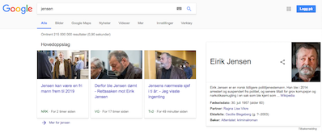

Domener
Et domene kan betraktes som en identitet på Internett. Vi mennesker har i tillegg til vårt eget navn et personnummer. Slik er det også med enheter i et TCP/IP-basert datanettverk. Enhver enhet må ha sin unike IP-adresse for å kunne kommunisere med andre enheter på Internett. IP-adresser er tallkoder bestående av heltall med verdier fra 0 til 255, som skrives som fire heltall adskilt med punktum. Man kan se for seg domenet som et navn, og IP-adressen som et personnummer. I likhet med oss mennesker går vi ikke rundt og husker på hverandres personnummer - vi foretrekker navn. Den samme logikken er opphav til domenenavnene. Bak ethvert domene finnes det en IP-adresse. Når vi skriver inn en URL i adressefeltet i nettleseren, vil tjenesten DNS (Domain Name System) sy domenavnet og IP-adressen sammen. DNS vil derfor «oversette» domenenavnet til IP-adressen til serveren man har forespurt. Dette gjør det enklere for oss å navigere på Internett.
URL
Domener er en bestanddel i en URL. En URL (Uniform Resource Locator) viser til en adresse på Internett. URL-er ser slik ut: protokoll://subdomene.domene.toppdomene/path. En beskrivende URL som eksempel er https://www.nrk.no/sport/.
- protokoll:
https- kanal for utveksling av informasjon - subdomene:
www- kan oppgi tjenester innenfor domenet. F.eks. blogg.domene.toppdomene - domene:
nrk- domenenavnet som svarer til en IP-adresse. Oversettes av DNS. - toppdomene:
no- toppdomener er ofte landskoder. Man har også andre kjente eksempler som .com og .org. - path:
sport- kan angi en mappe eller et filnavn innen et domene.
Søkeoptimalisering(SEO)
 Med søkeoptimalisering menes din synlighet på Internett. I disse tider med sosiale medier er dette svært relevant, gjerne under knaggen «hashtagg». Alt handler om å være synlig. Valg av domene kan være derfor avgjørende for din virksomhet. I tillegg til å være enkelt og lett å huske, bør det også være beskrivende for innholdet/virksomheten, og inneholde søkeord. Snekker Jensen ønsker nok å ha et annet domene enn f.eks. jensen.no dersom han ønsker litt å gjøre. Lite trolig vil noen finne han ved et raskt googlesøk…